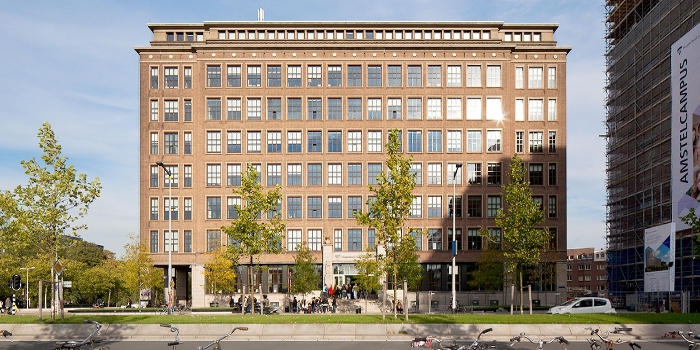
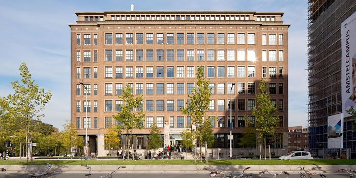
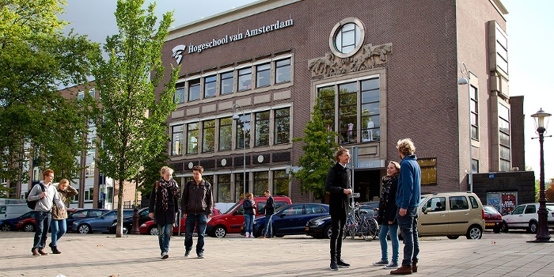
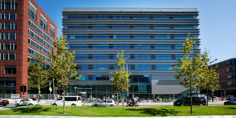
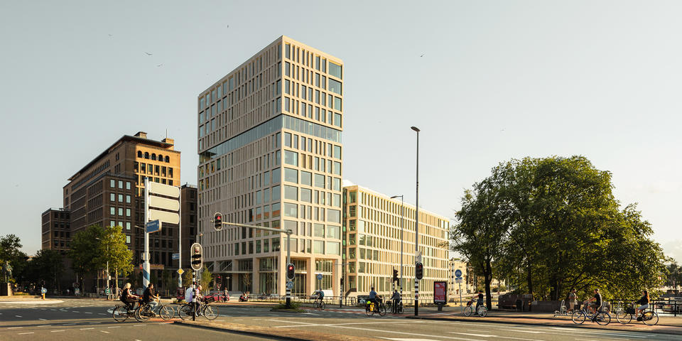
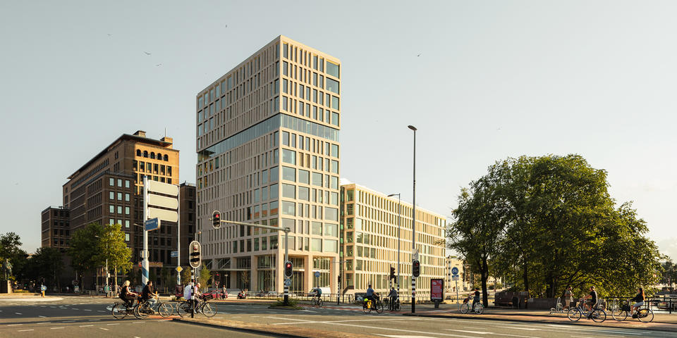
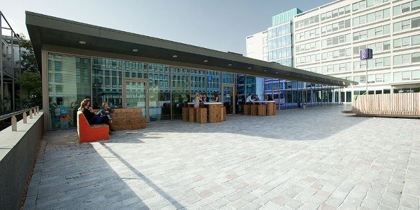

.jpg)
Het Kohnstammhuis (KSH):
Het Kohnstammhuis is een van de meest iconische gebouwen van de Hogeschool van Amsterdam (HvA).
Gelegen in het hart van de stad, biedt dit historische pand een thuisbasis voor verschillende
opleidingen en diensten van de HvA.
Naast zijn indrukwekkende architectuur en centrale ligging, staat het Kohnstammhuis ook bekend om
zijn moderne faciliteiten en inspirerende studieruimtes,
die bijdragen aan een dynamische leeromgeving voor studenten en medewerkers.
Het Theo Thijssenhuis (TTH):
Het Theo Thijssenhuis is een belangrijk gebouw van de Hogeschool van Amsterdam (HvA),
waar diverse opleidingen en ondersteunende diensten zijn gehuisvest. Dit moderne pand,
gelegen op de levendige Amstelcampus, biedt studenten en medewerkers een inspirerende en
toegankelijke omgeving om te studeren en te werken. Met zijn eigentijdse architectuur en
geavanceerde voorzieningen draagt het Theo Thijssenhuis bij aan de dynamische sfeer van de HvA.
 

Het Benno Premselahuis (BPH):
Het Benno Premselahuis is een markant gebouw van de Hogeschool van Amsterdam (HvA),
waar creatieve en innovatieve opleidingen samenkomen. Dit moderne pand is vernoemd naar de
invloedrijke Nederlandse ontwerper en publicist Benno Premsela, en biedt studenten een inspirerende
plek om te studeren, creëren en samenwerken.
Met zijn ruime en lichte werkruimtes, geavanceerde faciliteiten en centrale ligging is het een
geliefde locatie voor zowel studenten als docenten.
Het Koetsier-Montaignehuis (KMH):
Het Koetsier-Montaignehuis is een opvallend gebouw binnen de Hogeschool van Amsterdam (HvA),
dat een belangrijke rol speelt in het dagelijks leven van studenten en medewerkers.
Dit moderne pand is uitgerust met hoogwaardige faciliteiten en biedt een inspirerende
omgeving voor zowel onderwijs als onderzoek. Het huis, vernoemd naar de bekende zakenman
Jan Koetsier en de filosoof Michel de Montaigne, ademt een sfeer van innovatie en academische groei.


Het Muller-Lulofshuis (MLH):
Het Muller-Lulofshuis is een belangrijk gebouw binnen de Hogeschool van Amsterdam (HvA) en huisvest
diverse opleidingen en ondersteunende diensten. Dit moderne pand is voorzien van innovatieve
onderwijsfaciliteiten,
comfortabele studieruimtes en biedt een inspirerende omgeving voor zowel studenten als medewerkers.
Het Muller-Lulofshuis ligt in een levendig deel van Amsterdam, waardoor het gemakkelijk bereikbaar
is
en een centrale rol speelt in het dagelijks leven van de HvA-gemeenschap.
Het Wibauthuis (WBH):
Het Wibauthuis is een belangrijk en modern gebouw van de Hogeschool van Amsterdam (HvA),
strategisch gelegen aan de Wibautstraat, een van de belangrijkste verkeersaders van de stad.
Dit innovatieve gebouw huisvest diverse opleidingen en biedt studenten en medewerkers een
inspirerende
omgeving met moderne voorzieningen, zoals studieruimtes, collegezalen en werkplekken.
Het Wibauthuis is bovendien een duurzaam gebouw, ontworpen met oog voor de toekomst en het milieu.
 

Het Jakoba Mulderhuis (JMH):
Het Jakoba Mulderhuis is een indrukwekkend nieuw gebouw van de Hogeschool van Amsterdam (HvA),
dat moderne architectuur en duurzame bouwtechnieken combineert. Dit innovatieve pand,
vernoemd naar de bekende Nederlandse stedenbouwkundige Jakoba Mulder, biedt ruimte aan
verschillende opleidingen en beschikt over state-of-the-art faciliteiten voor zowel
studenten als medewerkers. Het Jakoba Mulderhuis staat symbool voor de toekomstgerichte
visie van de HvA en biedt een inspirerende omgeving om te studeren en te werken.
Benieuwd naar meer informatie over het Jakoba Mulderhuis?
Klik dan op de knop hieronder!
Studio HvA:
Studio HvA is een innovatieve en inspirerende ruimte binnen de Hogeschool van Amsterdam,
speciaal ingericht voor creatieve en technische projecten. Hier komen studenten,
docenten en professionals samen om te experimenteren met de nieuwste technologieën,
van audiovisuele producties tot virtual reality en ontwerp. Studio HvA biedt moderne
faciliteiten en een stimulerende omgeving waar nieuwe ideeën tot leven komen en samenwerkingen
worden aangemoedigd.
Ben je benieuwd naar de mogelijkheden die Studio HvA biedt?
Klik dan op de knop hieronder!
